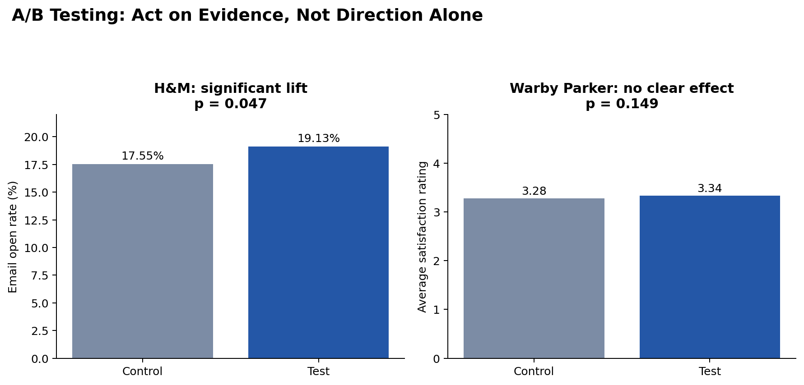

Statistics · Excel · decision quality
A/B Testing Decision Analysis
Two experiments that show why a higher test result is not automatically enough evidence to recommend a rollout.

H&M email subject line
The test subject line increased open rate by about 1.58 percentage points. The two-sided p-value was approximately 0.047, so the result met a 5% statistical-significance threshold, although the test still fell short of the original 20% business target.
Warby Parker landing page
The test group had a slightly higher mean rating, but the Welch t-test p-value was approximately 0.149. The observed difference was not statistically significant, so it should not be described as proof that the new page improved satisfaction.
Quality lesson
The analysis separates direction, statistical evidence, and business success criteria. It also documents the risk of false positives and false negatives and recommends tracking conversion, revenue, and engagement rather than optimizing a single metric in isolation.